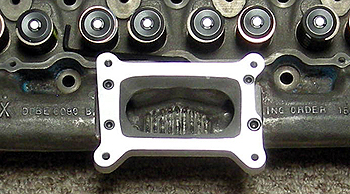

Cylinder Head Rebuilding & Modifications |
Classic Inlines offers professional cylinder head service for all Ford small six cylinder heads, including stock log style, Australian 250-2V, and our aluminum cylinder heads. Services range from stock rebuilds, to fully ported high performance heads, including 2V log conversions. We also offer cast iron and aluminum welding, crack repairs, flow testing, and all types of machine work. Our shop is fully equipped with a 400cfm flow bench, Quickway guide and seat machine, Quickway valve resurfacer, and the latest advanced computer simulation programs.
|
|

2V Conversion with Holley/Autolite Adaptor |

The shop owner/operator worked for General Motors for 29 years as a Senior Engineering Associate, spending the last 17 years at the GM Proving Grounds, working in the Engine Development Group. Primarily working in the R&D department, he specialized in cylinder head, camshaft, and valve train, design and development.
He also has an extensive background in drag racing, building numerous motors and several race cars over the past 36 years, for customers and for his own personal use. As such he has many hours sitting behind the wheel, as well as turning the wrenches, most recently in his "A Gas" dragster.
He has ported and assembled numerous aluminum cylinder heads for Classic Inlines, as well as several Australian 250-2V and stock cast iron log heads. He has also completed several 2V conversions and log modifications, and as such, has more experience building performance cylinder heads for the Ford small six, than any other shop in the USA.
Simply put, he has the experience and knowledge to do the job right, the first time. While it may cost a bit more to have us build a head for you (mainly due to shipping fees) you'll be able to install your rebuilt cylinder head with confidence, knowing the job was done right.
If you don't have us do your head work, be very cautious selecting a shop. Working on a set of V8 heads does not qualify them as experts on the small six head. There are little tricks and issues that most shops are unaware of, simply because they do not have the proper experience. I can't tell you how many times I've had customers tell me they have a so called "expert", working on their cylinder head, only to hear nightmares several months later. And in case your wondering, we do fix their errors, however it can be very expensive.
|
Important Ordering Information |
NOTE: When ordering a rebuilt or modified cylinder head, please include the following information: deck height, bore size, gasket thickness, desired C/R and RPM range, type of induction, cam specifications, type of transmission, rear gear ratio, intended application (daily driver, weekend cruiser, show, street/strip, full race, etc),
and any other pertinent information.
NOTE: If you want a port divider installed, you must purchase the divider and send it with the cylinder head. If you want different valve springs, other than what we sell, you need to send them with the cylinder head as well, along with the spring specifications. If you supply the valve springs we will refund the price of our springs when the head is finished. Thanks. |
Please e-mail us for current pricing and/or quotes
|
Click here to purchase Carburetors, Adaptors, and Related Products
|
|
|